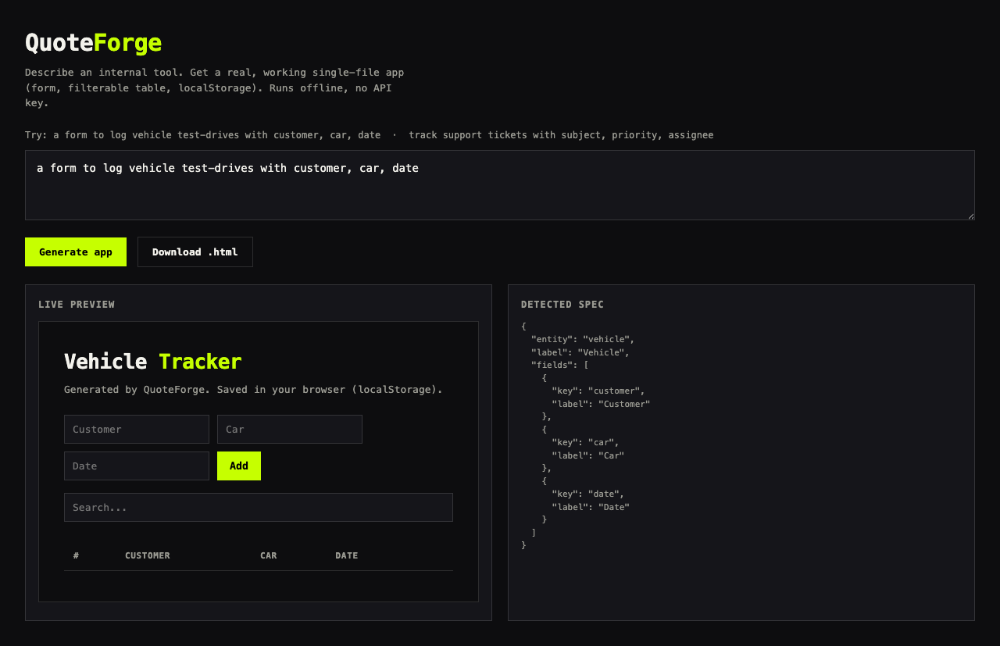

FILE / 03-QUOTEFORGE · generator
QuoteForge
Internal-tool generator
You are at a client site. Someone says "I need a form to track test-drives." QuoteForge runs that sentence through a model and turns it into a real, working single-file web app. Type your own sentence and generate a real app in the browser. No server, no key.
"They described a tool in one sentence. We shipped it before lunch."Field generation
LIVE APP

QuoteForge turning a plain sentence into a working single-file app, offline.
JOHN / FORGE · describe the tool you need
a form to track test drives with name phone and date